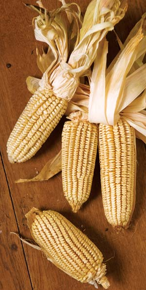
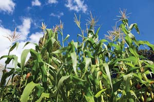
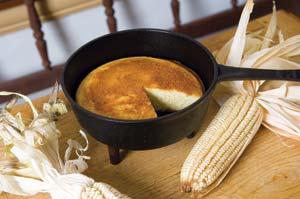
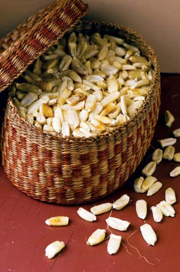

Anyone looking for the old-fashioned taste that made Southern corn bread famous need look no further than the Old South dent corn called “gourdseed.” With flat, cream-colored kernels that resemble skinny pumpkin seeds - some Native Americans referred to them as “teeth” - this is a soft-kernelled, late-maturing variety with rich flavor. Its texture is ideal for dumplings, puddings, flat breads and even pound cake, provided it’s sifted well.
Prior to the Civil War, this was the most widespread type of corn grown in the South, but it was eventually replaced by grittier hybrids that required baking powder or other chemical leaveners to make them light. That two-for-one “improvement,” a corn for grits as well as bread, appealed to commercial growers and processing mills, but at a cost to quality and flavor. Most of all, we lost the silken texture that gave old-time corn breads their delightful character.
Gourdseed corn belongs to an old family of flavorful Southern dent corns that includes ‘Shoepeg’ and several others that trace their ancestry to ancient Mexican teosinte, a primitive cornlike plant from which today’s corn descends. (Dent corn gets its name from the dimple found in the top of the kernel.) However, these Southern dent corns come from a separate line of domestication than the other corns in pre-Columbian Mexico.
Gourdseed’s dissemination among North American peoples prior to the colonial period was fairly widespread. The Iroquois grew it in New York under the name “tooth corn.” According to their oral tradition, they carried it north from what is now Ohio, which appears to tally with our historical records, since the Ohio River Valley quickly became the heartland for this type of corn during the early 19th century.
Two variations, yellow and white, were prized by settlers. While the yellow was consumed by the rural poor, the white was popular in the urban Deep South, and that association with refinement and status may be one of the reasons Southerners still prefer white cornmeal today. Anson Mills in Columbia, S.C., grows and sells corn products derived from a white gourdseed corn variety called ‘Carolina Gourdseed,’ a local selection.
Southern Exposure Seed Exchange in Mineral, Va., reintroduced another gourdseed strain called ‘Texas Gourdseed,’ in 1987 (the strain tested for this article). It’s probably one of the easiest to grow in home gardens. It was taken to Texas from the Upper South - that Ohio River gourdseed heartland - by farmers who used it to feed turkeys during a late 1800s upsurge in turkey farming. The turkeys got the best of that bargain, because the corn made them plump and happy, so you might say that even then the benefits of gourdseed corn were still filtering up the food chain, albeit at Thanksgiving and Christmas.
There are many benefits from growing this corn in your own back yard. Aside from the fact that it has real corn flavor, it’s remarkably adaptable. Gourdseed evolved over many centuries over a wide swath of the United States. It does just as well in Pennsylvania or Iowa as it does in Mississippi or Texas. This is a big plus for an heirloom corn, since many old corns evolved in response to specific soils and microclimates. Another benefit from gourdseed is that it does well in clay soil and withstands droughts, so two common garden headaches - heavy soil and watering issues - can be met head-on. It’s also relatively pest-free, so you can grow it organically with little trouble.
Optimal planting time for gourdseed corn is after the last frost. It matures in roughly 130 days, but if you like, you can also harvest it in the milk stage (while still soft and sweet), and eat it raw, Native American-style, as sweet corn. It’s even better grilled over hot coals.
The plants themselves grow anywhere from 8 to 12 feet tall, each with two ears high up on the stalks, well out of reach for raccoons. There should be 18 to 22 rows of corn on each cob, and because of the shape of the kernels, which stick out from the cob almost at a 90 degree angle, the corn is easy to remove from the cob, almost with the flick of your finger. I have grown this corn in hills 4 feet apart in all directions, as well as 8 to 10 inches apart in rows - with no real difference in productivity. The advantage of the hills was that I could also let beans twine up the corn, and because this corn is a robust grower with strong stalks, it can bear the weight of some of the larger heirloom pole beans, such as ‘Indiana Wild Goose,’ ‘Ohio Pole,’ and even some small-podded lima beans such as ‘Carolina Lima (Sieva),’ ‘Speckled Saba’ or ‘Willow Leaf.’
You can add interest to Thanksgiving dinner by using some gourdseed corn as decoration on the table. Or cook the unique kernels in stock and add them to wild rice as a turkey stuffing. The long narrow kernels are interesting in many recipes. If you grind a large quantity of flour or cornmeal from your gourdseed corn, store the extra flour in an airtight container in the freezer. Do the same with the whole kernels. This will both preserve flavor and keep the flour from turning rancid once it’s ground.
The old name of this bread is spider corn bread, spider being the early American term for a frying pan with three legs and a long handle. (You can get the same results by using a well-seasoned 10-inch cast-iron frying pan.)
I don’t think I have ever eaten a better corn bread than this one, and I can visualize the Johnny cakes, hush puppies and other old-time hearth cakes to be enjoyed from this corn. Here’s how to make it, adapted from an 1880s-era recipe.
1 2⁄3 cups white gourdseed cornmeal (see note, below)
1/3 cup whole wheat flour
1/4 cup granulated sugar
1 tsp salt
1 tsp baking soda
2 eggs
1 cup buttermilk
2 tbsp unsalted butter
1 cup rich milk (mix 2/3 cup milk with 1/3 cup cream)
Sift together the cornmeal, flour, sugar, salt and baking soda in a deep work bowl. In a separate bowl, beat the eggs until lemon-colored and frothy, then whisk in the buttermilk. Gently fold together the dry and liquid ingredients.
While preparing the batter, heat a 10-inch cast iron frying pan in an oven preheated to 375 degrees Fahrenheit. When the pan is thoroughly hot, remove it from the oven, melt the butter in it and coat the inside of the pan using a brush. Add the batter and spread it evenly, and then pour in the cup of rich milk (do not stir or disturb the batter underneath). The milk poured over the bread creates a cheeselike “skin” on top, which gives added flavor and considerable eye appeal.
Set the pan on a middle rack in the preheated oven and bake 25 to 30 minutes, or until the cake tests dry in the center. Serve immediately with homemade butter. Yields 6 servings.
Note: If you are milling your own gourdseed corn, grind it as fine as possible and sift it so it has the consistency of pastry flour. Sift it again while measuring for the recipe.
If you use a commercial cornmeal, you will have to adjust the amount used in this recipe. Modern cornmeal is much denser than old-style types for corn bread, so it is important to remove 3 1⁄2 level tablespoons from the amount of cornmeal listed above.
SEED SOURCE
Southern Exposure Seed Exchange
540-894-9480
CORNMEAL SOURCE
Anson Mills
803-467-4122
Heirloom Vegetable Gardening: A Master Gardener’s Guide to Planting, Seed Saving and Cultural History by William Woys Weaver, now on CD. If you want to explore the fabulous flavors, fascinating history and amazing diversity of vegetables, this is the book to start with. Food historian and Mother Earth contributing editor Will Weaver profiles 280 heirloom varieties, with authoritative growing advice and incredible recipes. First published in 1997, Heirloom Vegetable Gardening has since been out of print, with used copies selling online for as much as $300. We are proud to present the original text, with color photos, as a digital book on CD-ROM. Order now.
|
 ROB CARDILLO Gourdseed corn is a practical, flavorful, and visually intriguing addition to kitchen gardens. |
 ROB CARDILLO Gourdseed corn plants grow tall, with two ears held high on each stalk, denying raccoons their favorite sweet nighttime treat. |
 ROB CARDILLO The old name of this bread is spider corn bread, spider being the early American term for a frying pan with three legs and a long handle. |
|
 ROB CARDILLO Gourdseed corn’s unique attributes can make it a great addition to centerpieces and recipes. |
|
|